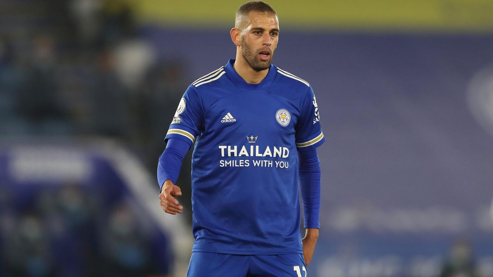

Bienvenue sur la page de Islam Slimani

Valeur actuelle: 2,5M d'€
Biographie
Islam Slimani, né le 18 juin 1988 à Alger, est un footballeur international algérien, évoluant au poste de Buteur au Sporting CP.
débuts (lique Professionelle D'algérie)
Le 17 mai 2009, Slimani est transféré au CR Bélouizdad pour la somme de 800 000 dinars algériens ce qui équivaut à 8 000 euros. Pendant la saison 2009-2010, il dispute 30 matches pour 8 buts marqués en première division algérienne. Durant la saison suivante, il est moins sélectionné par son entraîneur mais améliore ses résultats en marquant deux buts de plus avec son club que la saison précédente. Le 17 mai 2011, durant la saison 2010-2011, Slimani marque un quadruplé dans un match de championnat contre la JS Kabylie.
De Sporting A Leicester City
Slimani se dirige finalement vers un transfert au Sporting Clube de Portugal, Il marque son premier but avec le Sporting lors de la coupe du Portugal lors de la large victoire de son équipe contre le SC Alba (en) sur le score de 8-1. Le 16 mars 2014, il inscrit son 9e but de la saison et son 7e en championnat lors du choc entre le Sporting CP et le FC Porto qui permet à son équipe de gagner ce match et d'envisager une qualification directe en Ligue des champions 2014-2015. Après quatre ans au Sporting avec 57 buts marqués et deux trophées remportés, il quitte le club, Pour se dirigé vers un transfert a Leicester City Pour 35M d'€ Le 31 août 2016, son transfert pour 35 millions d'euros à Leicester City est officialisé. Il devient le joueur algérien et maghrébin le plus cher de l'histoire. Slimani a rapidement été en réussite, avec 3 buts lors de ses 4 premiers matches sous le maillot de Leicester City. Titulaire généralement sous les ordres de Claudio Ranieri, qui appréciait son profil et sa complicité avec Riyad Mahrez, le Fennec a terminé la première partie de saison avec un bilan de 6 réalisations en 16 rencontres toutes compétitions confondues. À la suite de son retour de la Coupe d'Afrique des Nations, il ne parvient plus à marquer et voit donc logiquement son temps de jeu être considérablement diminué. Il ne rentre pas dans les plans du nouvel entraîneur Craig Shakespeare remplaçant Claudio Ranieri, limogé le 23 février à la suite d'une saison où les résultats sont très différents de celle précédente.
En nationale
Le 29 octobre 2009, Slimani est appelé pour la première fois en équipe d'Algérie A' pour participer à un entraînement. Le 9 mars 2010, Slimani est de nouveau convoqué par Abdelhak Benchikha, cette fois pour une qualification au Championnat d'Afrique des nations 2011 contre la Libye. Slimani rejoint le groupe en remplacement de Youcef Saïbi, blessé, mais ne joue pas.
Le 12 mai 2012, Slimani est appelé pour la première fois en équipe d'Algérie pour disputer des rencontres qualificatives à la Coupe du monde 2014 contre le Mali et le Rwanda, ainsi que pour disputer le match retour qualificatif pour la Coupe d'Afrique des nations 2013 contre la Gambie. Le 26 mai, il a fait ses débuts sur le terrain en entrant à la mi-temps dans un match amical contre le Niger.Une semaine plus tard, le 2 juin, Slimani marque son premier but international pour l'équipe d'Algérie, pour le troisième but dans la victoire de 4-0 sur le Rwanda dans les éliminatoires de la Coupe du monde 2014 d'un coup de tête. Il marque son 2e lors d'une défaite (2-1) contre le Mali sur une erreur du gardien Soumbeyla Diakité. Le 15 juin 2012, il inscrit un doublé face à la Gambie et marque pour la troisième fois de suite avec l'équipe nationale algérienne. Le 9 septembre, lors d'un match contre la Libye, il fait une passe décisive à Hillal Soudani ce qui permet à l'Algérie de s'imposer sur le score de 1-0 en match aller à l'extérieur. Lors du match retour face à l'équipe libyenne de ces qualifications à la Coupe d'Afrique des nations 2013, Islam Slimani marque le de uxième but de la tête sur un centre de Soudani à la sixième minute. Il offre ainsi à l'Algérie le score final de la rencontre, 2-0, et envoie les Verts en Afrique du Sud pour la phase finale de la compétition continentale.Il figure dans la liste des 25 joueurs nommés pour le titre de joueur africain de l'année 2013.Il fait ses débuts en Coupe du monde le 17 juin 2014 contre la Belgique en remplaçant Soudani à la 66e minute (défaite 2-1). Il se met en valeur lors de la deuxième journée de la phase de groupes face à la Corée du Sud en ouvrant le score et en délivrant une passe décisive. Son équipe s'impose 4 buts à 2, et il est désigné homme du match19. Au cours du dernier match de groupe contre la Russie, il marque le but de l'égalisation algérienne à la 60e minute et est désigné homme du match pour la seconde fois consécutive ce but permet à l'Algérie d'accéder pour la première fois de son histoire aux huitièmes de finale de la Coupe du monde. Lors de la CAN 2019 disputée en Égypte, Slimani devient champion d’Afrique pour la première fois en inscrivant un but face à la Tanzanie en phase de poules.Lors du troisième match des éliminatoires de la Coupe du monde 2022 face au Niger le 8 octobre 2021, il inscrit son 37ème but avec l'Algérie, devenant ainsi le meilleur buteur de la sélection algérienne après avoir dépassé le record d'Abdelhafid Tasfaout (36 buts).
Style de jeu
Slimani est un joueur physique, il possède un gabarit imposant dont il use pour peser sur la défense. C'est un bon attaquant pivot, du fait de son excellent jeu de tête. Mais il est aussi bon footballeur, altruiste, capable de se muer en passeur. S'il ne possède pas de grand pouvoir d'accélération, il est généreux dans l'effort, et fait preuve de beaucoup d'abnégation sur le terrain. Il est également considéré comme un renard des surfaces car il est opportuniste lorsqu'il se présente devant la cage adverse.